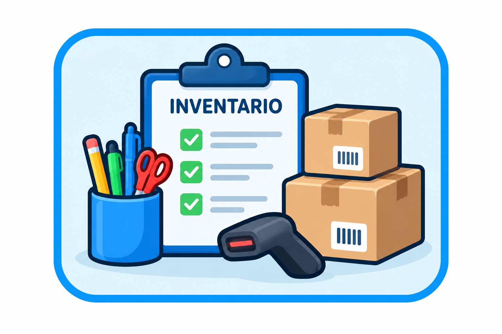

1. Inicio de sesión
Permite que los usuarios autorizados ingresen al sistema utilizando su correo electrónico y contraseña.
- Ingresar el correo electrónico.
- Ingresar la contraseña.
- Presionar Iniciar sesión.
- El sistema valida las credenciales.
2. Gestión de inventario

Permite administrar los productos disponibles en Papelería San Carlos.
- Registrar nuevos productos.
- Consultar productos existentes.
- Actualizar cantidades y precios.
- Controlar las existencias.
3. Registro de ventas
Permite registrar las compras realizadas por los clientes.
- Buscar el producto.
- Seleccionar la cantidad.
- Agregar el producto a la venta.
- Verificar el total.
- Registrar la venta.
4. Consulta de reportes
Permite consultar información sobre las operaciones realizadas.
- Reporte de ventas.
- Reporte de inventario.
- Consulta de productos disponibles.
- Identificación de existencias bajas.
5. Gestión de usuarios
Permite administrar las personas autorizadas para utilizar el sistema.
- Nombre del usuario.
- Correo electrónico.
- Rol del usuario.
- Estado del usuario.
Conclusión
El sistema de gestión de Papelería San Carlos facilita el control del inventario, el registro de ventas, la consulta de reportes y la administración de usuarios.